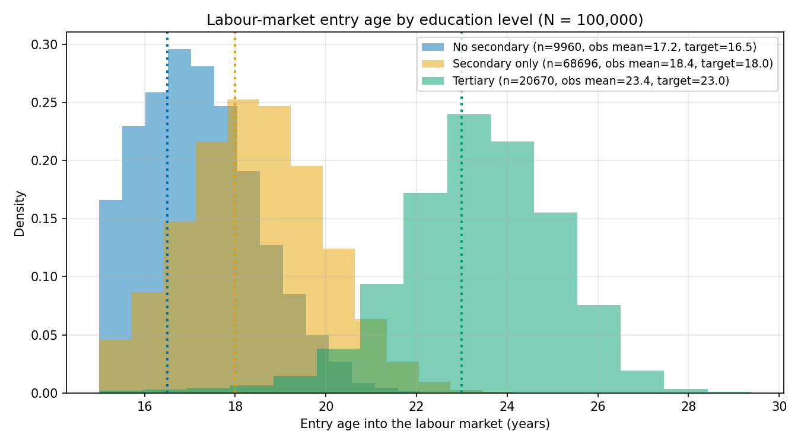
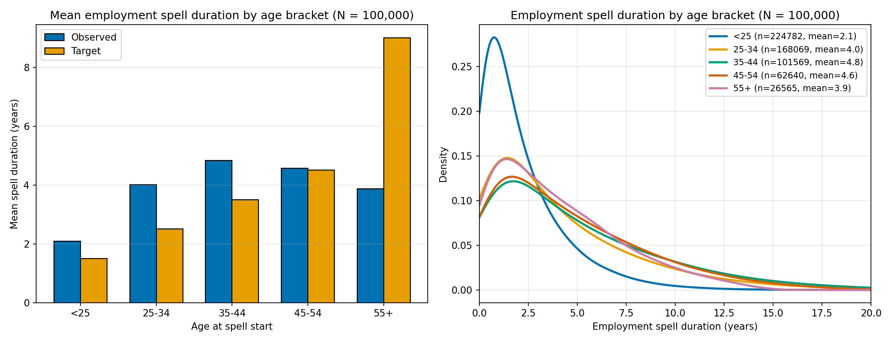
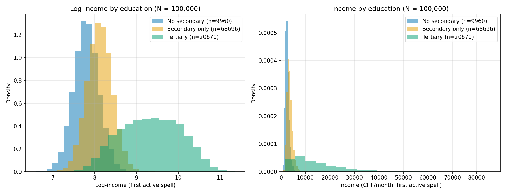
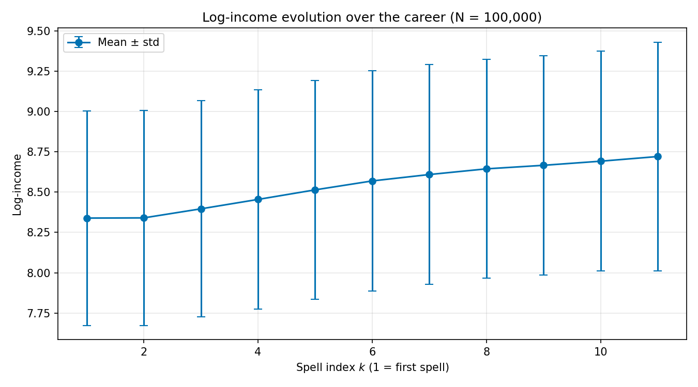
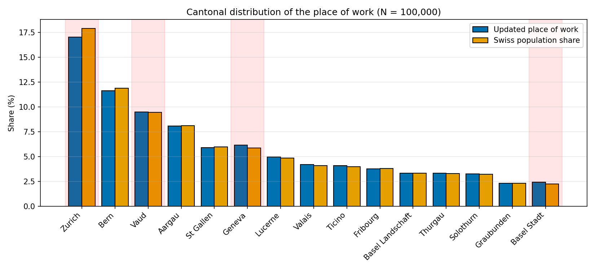
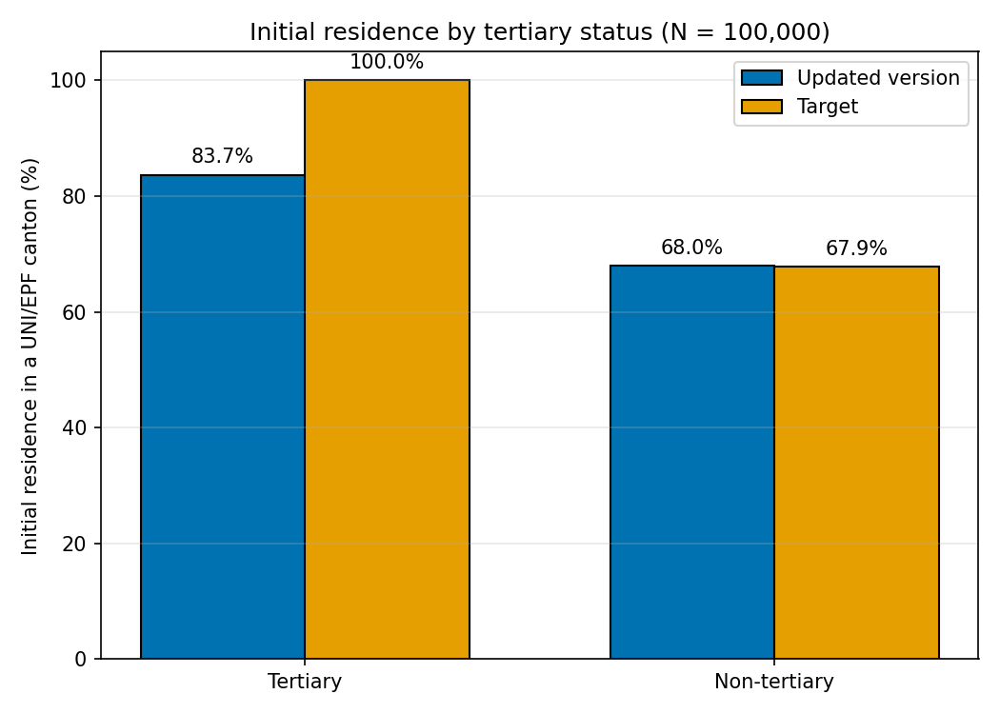
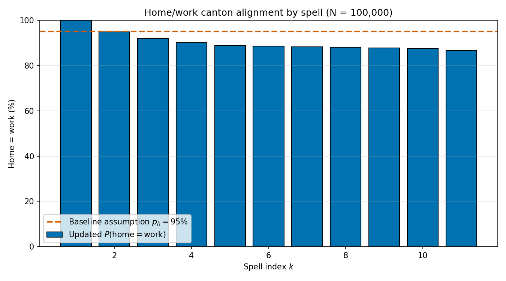
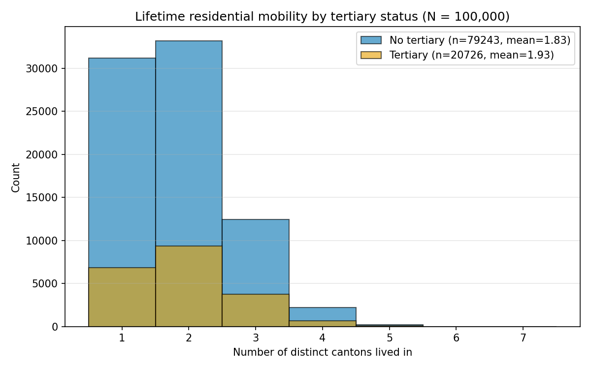

Results by trajectory. Each trajectory has its own section. Drop the PNGs into img/ using the file names shown; adjust captions freely.
Existence
[Caption][Caption][Caption][Caption]
Education
[Caption][Caption][Caption][Caption]
Driving Licence
[Caption][Caption][Caption][Caption]
Work

Labour-market entry age, by education pathway

Employment spell durations

Income distribution, by education level

Income over the career

Cantonal distribution of the place of work
Residence

Initial residence after education

Home vs work canton alignment

Lifetime inter-cantonal mobility
Sample of individual lives
Timelines. Ten individuals drawn at random from the synthetic cohort. Each has a life timeline (education, work with salary & place, driving licence) and a separate residence timeline. Both axes are shown: age on top, calendar year below. Generate the data with scripts/make_sample.py → data/sample_10.json.
Tableau de données
CSV. Déposez votre fichier dans data/results.csv (chargé automatiquement en ligne) ou utilisez le bouton Charger un CSV… ci-dessous (marche aussi en local). Séparateur virgule.
Les colonnes s'affichent dans l'ordre du fichier. Vous réagencerez ensuite.